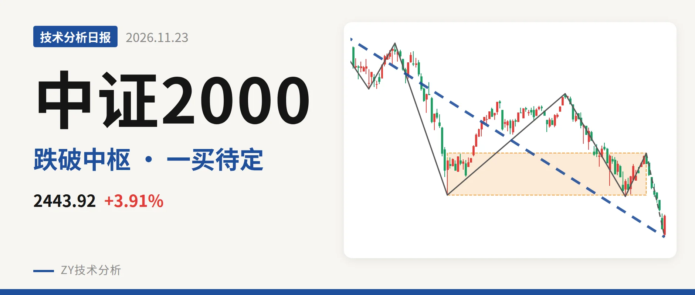
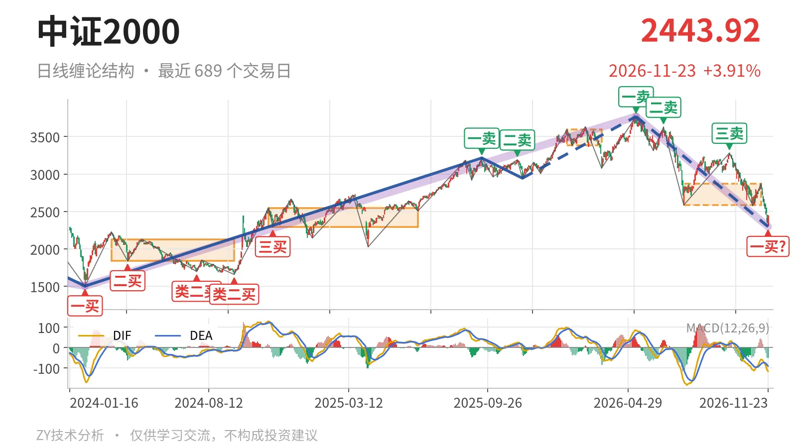

中证2000｜新低2297.27点，一买待定

最近日线中枢 2585.35—2872.13点，收盘位于中枢之下
一句话：下跌段未结束，新低后暂定一买未定型，先看2585点。
📉 走势结构：一卖之后，下跌线段还没结束
当前日线仍处于5月14日以来的日线下跌线段里，这段从3768.08点跌到2297.27点，跌幅约39.0%，内部已有7笔，到11月23日还没有结束。5月14日一卖后，6月23日二卖、9月22日三卖一个比一个低，反弹高度持续受压。更大级别看，2024年2月6日至2026年5月14日的上涨段在3768.08点后转入反向下跌，当前更大级别下跌段也同样没有结束。

📍 中枢与位置：跌破最近中枢，仍在更大区间内
最新收盘2443.92点，低于7月21日至11月12日的日线笔中枢下沿2585.35点约5.5%。该中枢区间2585.35—2872.13点，已明显低于1月26日至3月23日的3381.36—3593.19点，中枢下移清晰。当前价格还在2024年11月12日至2025年6月23日中枢2293.12—2547.90点内部，也略高于2022年4月27日至2023年6月19日线段中枢上沿2437.36点。日线离开最近中枢向下，但尚未脱离更大级别的震荡区。
🧭 买卖点：卖点逐级下压，新低出现暂定一买
5月14日一卖3768.08点、6月23日二卖3626.48点、9月22日三卖3280.29点，一个比一个低，其中9月22日三卖是反抽未回到3381点上方。11月23日最低2297.27点，在日线笔级别列为暂定一买，线段级别也列为暂定类二买。由于11月12日至11月23日的下跌笔与5月14日以来的下跌线段均未结束，这个买点会随后续走势变化；若再创2297.27点以下新低，则它只对应更小级别。

⚖️ 背驰：面积收缩，DIF低点却仍新低
当前最需要看的是两段下跌笔的力度。9月22日至11月2日下跌笔绿柱面积873、DIF低点-108.5；11月12日至11月23日下跌笔截至23日绿柱面积137、DIF低点-115.7。价格新低到2297.27点，绿柱面积远小于前段，但DIF低点更低，因此还不构成标准“新低不新弱”的底背驰。当前更多是绿柱面积收缩，暂定一买需要等这笔结束再定型。
🔎 关键位置观察：2585点得失决定反抽性质
上方最近中枢下沿在2585点附近。反抽若回不到2585点上方，对7月21日至11月12日中枢而言结构上就是三卖；重新站回2585点上方，下跌更可能只是中枢扩展或回到震荡。下方2293点附近是2024年11月12日至2025年6月23日中枢下沿，若失守，下方结构参考2086点附近。当前结构偏弱，弱在跌破最近中枢下沿、中枢下移、DIF低点仍新低；但价格收在2437点上方，且绿柱面积暂未放大，先看2585点得失。
⚠️ 本文为基于公开行情数据的缠论技术结构记录，由程序自动计算并生成，仅供学习交流，不构成任何投资建议。市场有风险，投资需谨慎。